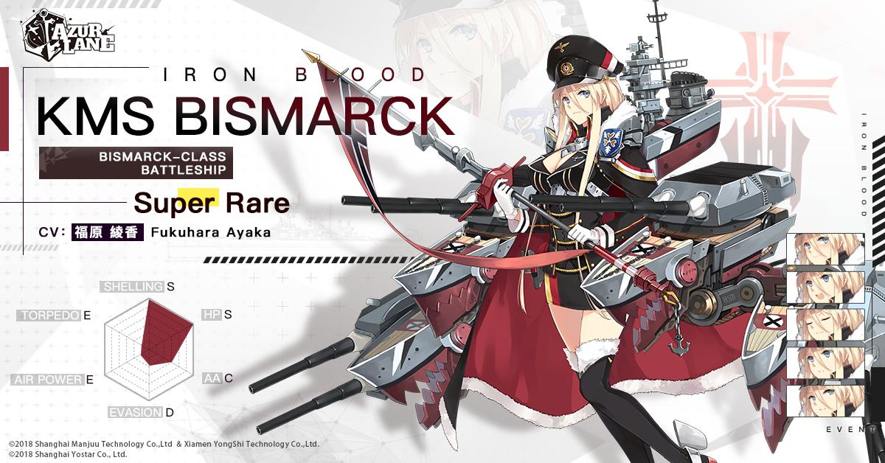

Bismarck

| Bismarck is an antagonist in Azur Lane, battleship of Ironblood.
Her real counterpart is KMS Bismarck. Bismarck first appears in the tutorial of the game, absent from English servers,
as main antagonist of the battle the commander is invited to participate with Hood. Hood and the commander first
engage Prinz Eugen, mistaking her for Bismarck, before fighting the concerned battleship herself. Bismarck could
be built in limited construction in the event Scherzo of Iron and Blood. As a playable character, if Bismarck
first seems cold, it is because she has difficulties to express herself. She even does for her sister Tirpitz
. As a leader of Ironblood, Bismarck felt she always had to be adamant, and she had to put aside her shy personality. |